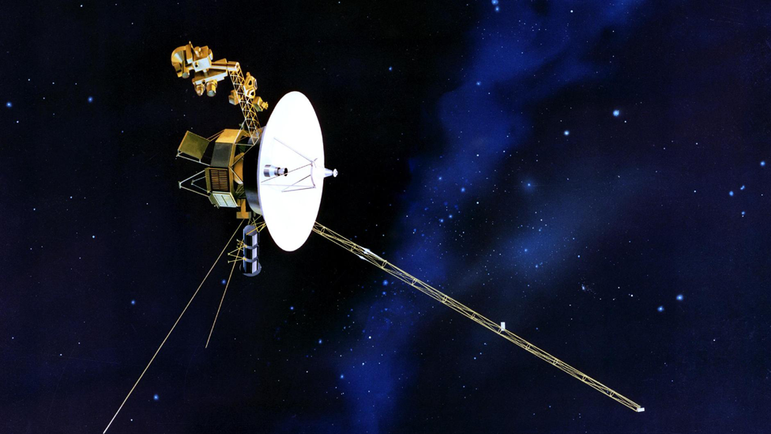
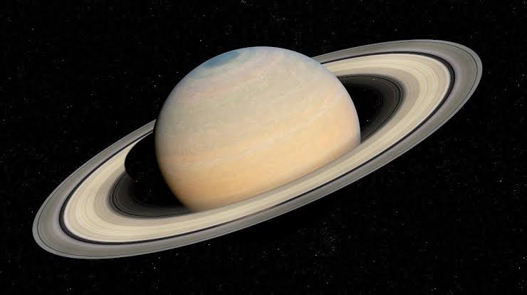
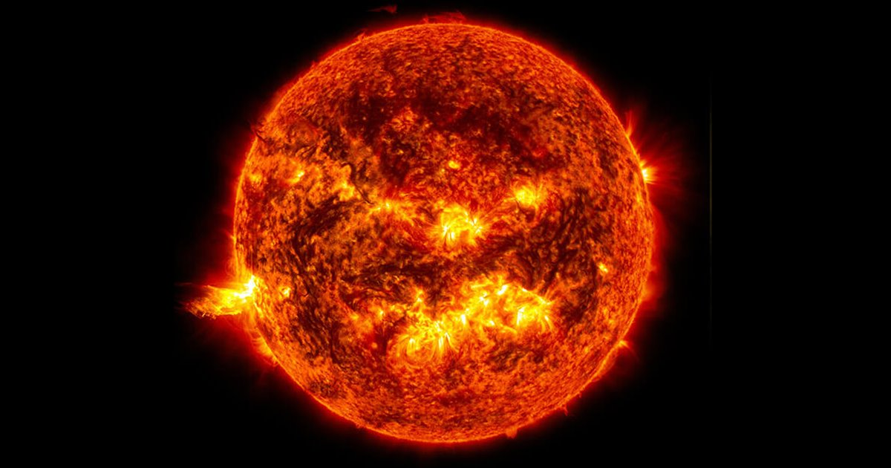

Sistema Solar
Un recorrido por nuestro vecindario cósmico.

James Webb
El telescopio espacial más potente jamás construido.

Voyager 1
La nave humana más alejada de la Tierra, la cual contiene un disco de Oro con sonidos e imágenes de la Tierra.

Saturno
El gigante de los anillos.

Jupiter
El Planeta más grande del Sistema Solar.

El Sol
La estrella al centro del Sistema Solar.